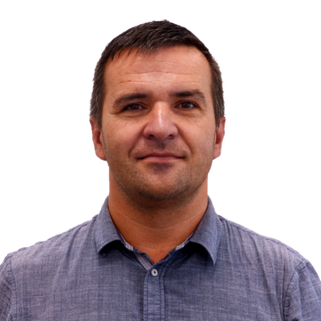

Vrchlabí nepotřebuje revoluci. Slušel by mu však jiný směr a nová dynamika
Volební rozhovor s lídrem kandidátky ODS Vrchlabí Jiřím Štefkem.

S číslem 1 jde do letošních komunálních voleb kandidátka Občanské demokratické strany v čele s lídrem Jiřím Štefkem. Ve volebním rozhovoru vypočítává priority své kandidátky a nabádá Vrchlabáky, aby se nenechali odradit od účasti ve volbách. „To, že na některé věci máme jiný názor než stávající vedení města, je přeci zcela normální a přirozené. Skutečnost, že jsme se přihlásili do komunálních voleb a nabídli lidem naše nápady, přece není žádný zločin a nebo něco, za co bychom se museli stydět. Naopak, je to výraz odvahy, zájmu a chuti udělat něco pro naše město a jeho občany.“
Proč jste se rozhodl kandidovat v komunálních volbách?
Vrchlabí je můj domov a s tímto městem je spojena většina zásadních okamžiků mého života. Moje práce novináře je však i o tom, že se velice pozorně dívám kolem sebe a popisuji, co vidím a co se tady děje. Naše město se nepochybně vyvíjí, posouvá a mění. Ale několik let už mám pocit, že posun v nastaveném směru není řadě místních lidí po chuti, některé služby zcela postrádají a že od svého města a jeho vedení čekají poněkud něco jiného. Někteří se cítí dokonce opomíjeni a přehlíženi. Četné hovory s mnoha Vrchlabáky mě utvrdily v tom, že takový pocit nemám jen já, ale i řada místních. A jedinou možností, jak s tím něco udělat, je tyto věci popsat, navrhnout pro ně řešení, kandidovat v komunálních volbách a zastupitelstvu očekávané změny nebo novinky prosadit.
Máme tomu rozumět tak, že s vámi a dalšími kandidáty ODS přijdou změny, třeba i razantní?
Zcela jistě ne. Ostatně nikdy jsem neřekl nebo nenapsal, že je tady všechno zcela špatně. Naopak, umím férově uznat, že se tady řada věcí povedla a že tyto úspěchy jdou za vedením města v čele s Janem Sobotkou. Rovněž si myslím, že tu velké množství procesních věcí nebo agend funguje díky šikovným lidem na městském úřadě a tyto agendy budou fungovat stejně dobře i v příštích letech, kdy už může vedení města vypadat zcela jinak. Nicméně jdu do voleb proto, že si myslím, že některým agendám nebo záležitostem je potřeba dát jiný směr a upravit jejich obsah. Vyjít ze základu, který už tady je a funguje a dát mu jinou dynamiku. Tedy nepřeji si a nebudu ničit, bořit a rušit věci, které tu jsou a nebo už jsou ve fázi realizace. Zároveň si též myslím, že zásadní změna by měla přijít v tom, že by Vrchlabáci měli mít starostu, který se práci pro město bude věnovat na plný úvazek. Jan Sobotka by se proto měl rozhodnout, jestli chce být senátor nebo starosta. Dělat oboje na 100 procent zkrátka nejde. Potvrzují mi to i známí a kamarádi starostové z jiných měst.
Upravit obsah, dát novou dynamiku… to jsou hezká hesla a fráze. Ale buďte konkrétní! V čem a jak?
Předně bych chtěl říct, že program naší kandidátky ODS není souborem slibů všeho a všem. Nejsme kouzelníci a ani naši konkurenti takové schopnosti nemají. Je nám jasné, že na všechno se nemůže dostat a tvrdit voličům něco jiného by nebylo poctivé. Třeba i proto, že město musí hlavně zajistit svůj běžný chod, musí opravovat chodníky a vodovodní infrastrukturu a tak dále... Proto jsme si vytyčili jen několik základních oblastí, pro která jsme si nachystali řešení a která jsou zároveň reálná a prosaditelná. A to i z pohledu městského rozpočtu. Za jednu z hlavních priorit považujeme nabídku bydlení…
… tou se ale ohánějí všichni, i vaši konkurenti.
Jistě a myslím, že je to vcelku logické. My na rozdíl od našich konkurentů razíme názor, že by se primárně měly opravit městské byty, které jsou dlouhodobě prázdné. Takových bytů je více než 80. Městu utíkají příjmy z nájmu a i díky tomu se Vrchlabí vylidňuje. Za posledních 25 let přišlo o desetinu svých obyvatel a tím i o nemalé příjmy z rozpočtového určení daní. Přitom v těchto prázdných bytech by mohlo žít klidně i 250 až 300 lidí. Na každého občana přitom Vrchlabí dostává od státu každoroně přes 22 tisíc korun. Každý si proto spočítat, o kolik peněz přicházíme. Proto nás štve, že město vyhodilo nemalé peníze za investice do parkovišť u Kartonky a kláštera a neinvestovalo tyto peníze do opravy nepoužívaných městských bytů. Ty lze přitom dělat hned a kontinuálně. Zástupci současné koalice místo toho slibují nové parcely v Hartě pro výstavbu rodinných domů. Na tomto místě bych zde rád připomněl, že takto před lety byl jako zářná investice prezentován projekt Trepka na Kalvárii. Ten skončil naprostým fiaskem a město utopilo nemalé peníze v projektové dokumentaci a nakonec i starosta uvedl, že byty v tomto projektu by byly spíš pro rekreaci než pro běžné bydlení a byly by velice drahé. A tato skutečnost se nezmění, ať už se s touto lokalitou bude dít cokoliv. Chtěl bych též podotknout, že v investičním výhledu na další roky stávající vedení města počítá s investicí do pozemků pro rodinné domy v Podhůří ve výši 21 milionů korun. Nepředpokládám, že tuto sumu chce zdejším příštím obyvatelům věnovat, ale že se plně projeví v ceně parcel. Tudíž také nepůjde o lacinou záležitost. A pak tu je další zásadní plánovaná investice, která už vůbec nedává smysl. Město hodlá zrekonstruovat zchátralý dům v Šírově ulici za 100 milionů korun! Po rekonstrukci bude však jeho skutečná hodnota poloviční. Je s podivem, do jakého stavu ho město nechalo během posledních dvaceti let dojít. Je to typická ukázka šlendriánského přístupu vedení města ke správě městského majetku.
Jaké jsou vaše další priority kromě bydlení?
Dále se chceme zaměřit na seniory a nabídku služeb pro ně. Naše společnost stárne a obávám se, že na to tady ve Vrchlabí nejsme zcela připraveni. Proto v našem programu máme body, které mohou seniorům pomoci okamžitě. Jsou to například dotované senior taxi, městská hromadná doprava pro lidi nad 65 let zdarma nebo vybudování denního stacionáře pro seniory. Ve střednědobém horizontu bychom měli řešit i výstavbu či rekonstrukci dalšího lůžkového domu seniorů. A když už jsem zmínil městskou hromadnou dopravu, tak bych zde rád zmínil, že chceme rozšířit její pole působnosti a upravit četnost spojů. Do jízdního řádu bychom rádi přidali zastávky u běžeckého stadionu ve Vejsplaších, ale třeba i Kauflandu. Nebráníme se ani propojení městské hromadné dopravy s Lánovem nebo Kunčicemi nad Labem. Zároveň bychom chtěli upravit jízdní řády tak, aby byly užitečné i pro pracovníky průmyslových firem a společenský život. Například nyní se nedá z Hořejšího Vrchlabí dostat autobusem k továrnám v dolní části města, aby lidé mohli jet autobusem na ranní směnu do práce.
Zmínil jste Hořejší Vrchlabí. Co nabízíte obyvatelům této části města?
Já bych jim chtěl především vzkázat, že jsme si vědomi, že stávající vedení města tuto čtvrť dlouhodobě přehlíželo a podle toho to v ní také vypadá. Odstrašujícím případem budiž most u Karmášků, který je v žalostném stavu. Město o tom ví již 11 let a stále tento problém přehlíželo. Víme, že investic v Hořejším Vrchlabí a Herlíkovicích bylo pomálu a na zdejší infrastruktuře je to hodně znát. Obdobné je to i v Hartě, kde máme pro změnu připravené řešení pro místní chátrající zámek. Jediné co, vedení města v Hartě předvedlo, je rušení přejezdu o Bočků, k němuž má dojít v blízké budoucnosti a které způsobí zdejším obyvatelům nemalé těžkosti. Starosta Jan Sobotka kdysi místním lidem slíbil, že nic takového se nestane.
Ve vašich volebních inzerátech se vyjadřujete i o podpoře sportu.
Ano. Chceme zrevidovat systém městských dotací tak, aby skončilo letité přehlížení některých sportovních klubů a z městských peněz neprofitovaly jen elitní či masové sporty jako hokej a fotbal. Vždyť i v ostatních oddílech sportují šikovné a nadané děti a z každoročního vyhlašování sportovců města je patrné, že mají úspěchy. Revize systému však neznamená, že bychom chtěli sjednotit výši dotace na každého sportovce. Jsme si vědomi, že ne všechny sporty mají stejné náklady a potřeby. Rádi bychom ale systém učinili více spravedlivým a do systému zavedli minimální dotaci na každého sportujícího člena do 18 let. Nechceme přijít o talenty napříč sporty.
Pro spokojený život občanů je důležitá i jistota práce.
Samozřejmě. To je alfa a omega všeho. Když zde nebude práce, nebude tu fungovat nic. Víme, že podstatnou část zdejší zaměstnanosti drží několik velkých závodů. Ale to nemusí trvat věčně. Věčně nemusí trvat ani cestovní ruch, protože zima v posledních letech je vrtkavá. Je proto potřeba vybudovat novou obchodní či podnikatelskou zónu a přilákat do ní nové firmy a zaměstnavatele a snažit se především o to, aby to byly firmy produkující zboží nebo služby s vysokou přidanou hodnotou. Měli bychom se zaměřit například na specializované výrobní firmy, vědu a výzkum, firmy z oboru informačních technologií či automatizace. Pod budováním nových pracovních míst si ale určitě nepředstavujeme skladový areál nebo další velkoprodejnu.
Kde na vaše sliby vezmete peníze?
Poměrně detailně sledujeme strukturu a plnění městského rozpočtu. Zatímco stávající vedení utrácí desítky milionů za velké stavební projekty, naše řešení jsou sofistikovaná a vyjdou na sumy minimálně o řád či dokonce dva nižší. V rámci rozpočtu se na jejich realizaci peníze vždy najdou. Jejich praktičnost a přínos pro občany Vrchlabí uznal při své nedávné návštěvě ve Vrchlabí i bývalý předseda vlády Petr Fiala, který sem zavítal na debatu s občany. Vnímáme to jako povzbudivý signál a potvrzení toho, že naše záměry dávají smysl. Rád bych zde připomněl a zdůraznil, že každá investice je vždy politické rozhodnutí většiny zastupitelstva.
Na závěr nám řekněte pár slov o vaší kandidátce.
Jsem velice rád, že se nám podařilo sestavit takto pestrou kandidátku plnou zajímavých osobností. Za každou z nich stojí nějaký příběh, ale i vůle něco udělat pro naši budoucnost. A právě takové lidi Vrchlabí potřebuje. Jsem všem z nich vděčný, že do tohoto volebního souboje šli se mnou. Na naši volební kampaň jsme si nenajímali žádnou PR agenturu a vše jsme si zaplatili sami. Nejsme financováni žádnou stranou a ani zavázáni nějakému mocenskému uskupení. Voličům bych rád vzkázal ať se nenechají odradit a přijdou volit. V propagačních materiálech stávajícího vedení města se to hemží rozdělování naší společnosti na „my“ a „oni“, na „zámek“ a jeho „opozici“. To, že na některé věci máme jiný názor než stávající vedení města, je přeci zcela normální a přirozené. Skutečnost, že jsme se přihlásili do komunálních voleb a nabídli lidem naše nápady, přece není žádný zločin a nebo něco, za co bychom se museli stydět. Naopak, je to výraz odvahy, zájmu a chuti udělat něco pro naše město a jeho občany. Aby se daly věci do pohybu a přišla nová energie a dynamika, musí přijít i chuť něco změnit a odvaha dát šanci novému. Papež Jan Pavel II. ve své nástupní řeči před téměř 50 lety vyzval lidi prostým apelem „Nebojte se“ a daly se do pohybu události dějinného významu. My se sice přepisovat dějiny nechystáme, nicméně tento apel bych s největší pokorou rád adresoval i já vám – váženým voličům.
Co chceme?
- opravit chátrající městské byty a nabídnout je novým nájemníkům
- zavést MHD pro seniory nad 65 let zdarma
- upravit jízdní řád MHD a otevřít nové zastávky
- vybudovat a otevřít zónu pro firmy a podnikatele
- zavést spravedlivější systém pro rozdělování městských dotací sportovním oddílům
- spustit systém senior taxi
- dát novou budoucnost a využití zámku v Hartě
- zrevidovat systém parkování v centru města
Jak hlasovat v komunálních volbách?
Každý volič ve Vrchlabí má v komunálních volbách k dispozici 21 hlasů. Buď může udělat velký kříž u názvu strany a tím dát hlas všem kandidátům této strany. A nebo může udělit malé křížky libovolným kandidátům napříč všemi kandidujícími subjekty. Ale pozor! Pokud udělá na volebním lístku více než 21 malých křížků, jeho hlas je neplatný. Pokud jich však udělá méně, ostatní hlasy propadají. Například pokud volič udělá na volebním lístku 10 malých křížků, zbylých 11 jich propadne. Poslední možností je kombinace velkého kříže u jedné strany a malých křížků u ostatních. V takovém případě obdrží hlas všichni kandidáti s malým křížkem a zbylý počet hlasů obdrží strana, u které volič udělal velký kříž.
Pro kandidátku ODS je důležitý zisk co největšího počtu hlasů. Podpořte nás proto prosím maximem svých hlasů a u kandidátní listiny číslo 1 udělejte velký kříž. Umožníte tím vnést do správy Vrchlabí novou dynamiku a energii, které naše město tolik potřebuje.